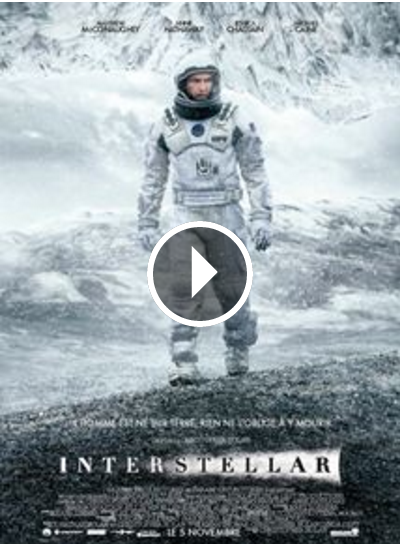
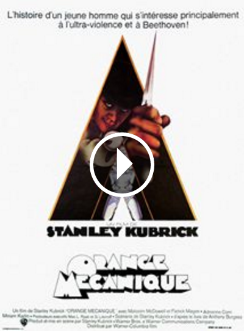
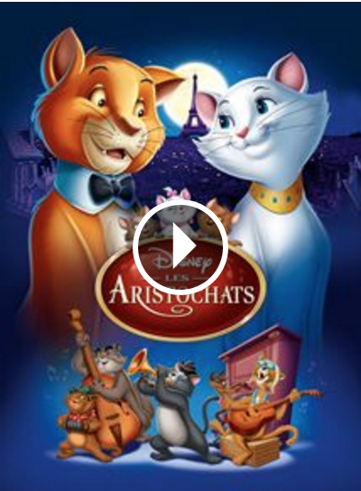

Bonjour, je m'appelle Audrey et je suis Customer Success Manager à Azendoo. Mais en ce moment, je suis étudiante au Wagon.
|  |
InterstellarLes aventures d’un groupe d’explorateurs qui utilisent une faille récemment découverte dans l’espace-temps afin de repousser les limites humaines et partir à la conquête des distances astronomiques dans un voyage interstellaire. |
|  |
Orange MécaniqueAu XXIème siècle, Alex, jeune chef de bande, exerce avec sadisme une terreur aveugle. Après son emprisonnement, des psychanalystes l'emploient comme cobaye dans des expériences destinées à juguler la criminalité... |
|  |
Les AristochatsParis, 1910. Mme de Bonnefamille, millionnaire excentrique, vit seule entourée de ses chats : Duchesse et ses trois petits, Marie, Toulouse et Berlioz. Un jour, elle convie son notaire pour léguer toute sa fortune à ses compagnons à quatre pattes. |